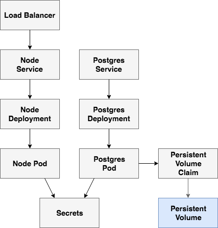
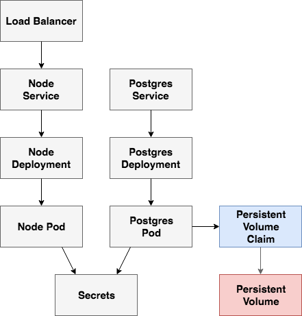
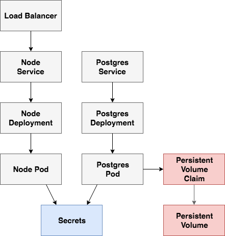
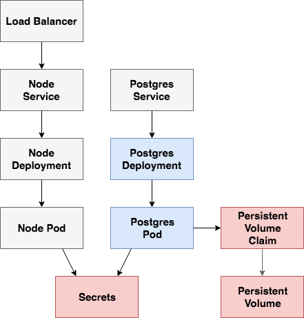
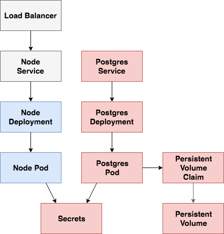
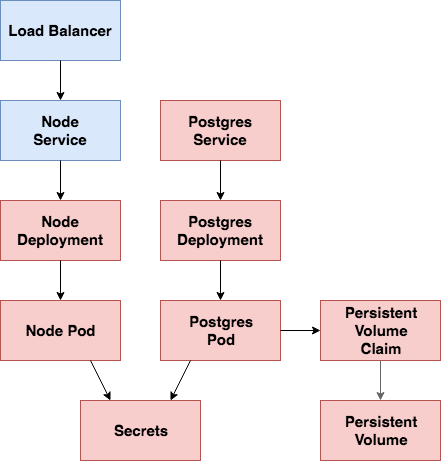

class: center, middle # Kubernetes for Application Developers <img src="images/kubernetes-logo.png" alt="kubernetes logo" style="width:20%;"> <br> <div> <span style="vertical-align:60%;">Presented by <em>Michael Herman</em> at <a href="https://www.meetup.com/Node-js-Denver-Boulder">Denver Node</a></span> <img src="images/javascript.png" alt="javascript logo" style="width:5%;"> </div> --- ### Agenda -- ##### (1) Intro 1. About Me 1. Objectives -- ##### (2) Theory 1. Container Orchestration 1. Kubernetes for App Developers 1. Kubernetes Concepts -- ##### (3) Practice 1. App Overview 1. Google Cloud Platform (GCP) 1. Volume 1. Secrets 1. Postgres Deployment + Service 1. Node Deployment + Service -- ##### (4) Next Steps --- class: center, middle ## Intro --- ### About Michael ``` $ whoami michael.herman ``` <p style="margin:0"><img src="images/me.png" style="max-width: 10%;" alt="me"></p> -- #### Day Job Senior Software Engineer at [ClickFox](https://www.clickfox.com/). <img src="images/clickfox.png" style="max-width: 4%; border:0; box-shadow: none;" alt="clickfox logo"> -- #### Also 1. Co-founder/author of [Real Python](https://realpython.com) 1. 😍 - [tech writing/education](http://mherman.org), [open source](http://github.com/mjhea0), [financial models](http://www.starterfinancialmodel.com/), [radiohead](http://radiohead.com/) <a href="https://testdriven.io"> <img src="images/mobile_image.png" style="max-width: 20%; padding-top:10px; box-shadow: none;" alt="testdriven.io"> </a> --- ### Objectives By the end of this talk, you should be able to... -- 1. Explain what **container orchestration** is -- 1. Discuss the pros and cons of using **Kubernetes** over other orchestration tools -- 1. Configure a Kubernetes cluster to run on **Google Cloud Platform (GCP)** -- 1. Run Node and Postgres on **Kubernetes** --- class: center, middle ## Theory --- ### What is Container Orchestration? -- As you move from deploying containers on a single machine to deploying them across a number of machines, you'll need an orchestration tool to manage (and automate) the arrangement, coordination, and availability of the containers across the entire system. -- **Issues** 1. Cross-server container communication 1. Horizontal scaling 1. Service discovery 1. Security/TLS 1. Zero-downtime deploys 1. Rollbacks -- <br> This is where [Kubernetes](https://kubernetes.io/) fits in along with a number of other orchestration tools - like [Docker Swarm](https://docs.docker.com/engine/swarm/), [ECS](https://aws.amazon.com/ecs/), [Mesos](http://mesos.apache.org/), and [Nomad](https://www.nomadproject.io/). <img src="images/kubernetes-logo.png" alt="kubernetes logo" style="width:10%;"> --- ### What is Container Orchestration? (continued...) -- **Which orchestration tool should you use?** -- - use *Kubernetes* if you need to manage large, complex clusters - use *Docker Swarm* if you are just getting started and/or need to manage small to medium-sized clusters - use *ECS* if you're already using a number of AWS services -- | Tool | Pros | Cons | |--------------|-----------------------------------------------|-----------------------------------------| | Kubernetes | large community, flexible, most features, hip | complex setup, high learning curve, hip | | Docker Swarm | easy to set up, perfect for smaller clusters | limited by the Docker API | | ECS | fully-managed service, integrated with AWS | vendor lock-in | -- There's also a number of managed Kubernetes services on the market. Do you want to focus on managing a Kubernetes cluster or on deploying your apps to production? -- <small><em>For more, review [Choosing the Right Containerization and Cluster Management Tool](https://blog.kublr.com/choosing-the-right-containerization-and-cluster-management-tool-fdfcec5700df).</em></small> --- ### Orchestration Feature Wish-list -- <table style="width:100%;"> <thead> <tr> <th>Feature</th> <th>Info</th> </tr> </thead> <tbody> <tr> <td>Health checks</td> <td>Verify when a task is ready to accept traffic</td> </tr> <tr> <td>Dynamic port-mapping</td> <td>Ports are assigned dynamically when a new container is spun up</td> </tr> <tr> <td>Zero-downtime deployments</td> <td>Deployments do not disrupt end users</td> </tr> <tr> <td>Service discovery</td> <td>Automatic detection of new containers and services</td> </tr> <tr> <td>Auto scaling</td> <td>Automatically scale resources up or down based on the load</td> </tr> <tr> <td>Provisioning</td> <td>New containers should select hosts based on resources and configuration</td> </tr> </tbody> </table> -- **What else?** -- Load balancing, logging, monitoring, authentication and authorization, security... *predictability*, *scalability*, and *high availability*... --- ### Kubernetes for App Developers -- **Smaller teams, smaller projects** 1. Increase velocity 1. Fewer bugs 1. Latest tools and technologies Happy developers! -- **Abstraction Layers** 1. Virtual Machines 1. Docker 1. Kubernetes Solid abstractions provide consistency across platforms, which leads to standards and best practices. -- **Concepts** App developers probably won't set up Kubernetes clusters, but you will [use Kubernetes much like you would any other PaaS](images/tweet.png). It helps to have an understanding of the architecture in order to debug and deploy your apps. --- ### Kubernetes Concepts -- The primitives: 1. Node 1. Pod 1. Service 1. Label 1. Deployment 1. Volume <small><em>Source: [Kubernetes 101: Pods, Nodes, Containers, and Clusters](https://medium.com/google-cloud/kubernetes-101-pods-nodes-containers-and-clusters-c1509e409e16)</em></small> <br><br> <img src="images/kubernetes-logo-2.png" alt="kubernetes logo" style="width:30%;"> --- ### Kubernetes Concepts (continued...) -- <div class="grid"> <div style="float: left; width: 45%;"> <strong>Nodes</strong> <p>A <a href="https://kubernetes.io/docs/concepts/architecture/nodes/">Node</a> is a worker machine provisioned to run Kubernetes. Each Node is managed by the Kubernetes master.</p> <strong>Pods</strong> <p>A <a href="https://kubernetes.io/docs/concepts/workloads/pods/pod/">Pods</a> is a logical, tightly-coupled group of application containers that run on a Node. Containers in a Pod are deployed together and share resources (like data volumes and network addresses). Multiple Pods can run on a single Node.</p> </div> <div style="float: left; width: 55%;"> <p style="margin-top:30px;text-align:center;"> <img src="images/flask-kubernetes-node-pod.png" alt="kubernetes node and pod" style="width:75%;"> </p> </div> --- ### Kubernetes Concepts (continued...) -- **Services** A [Service](https://kubernetes.io/docs/concepts/services-networking/service/) is a logical set of Pods that perform a similar function. It enables load balancing and service discovery. It's an abstraction layer over the Pods; Pods are meant to be ephemeral while services are much more persistent. -- **Deployments** [Deployments](https://kubernetes.io/docs/concepts/workloads/controllers/deployment/) are used to describe the desired state of Kubernetes. They dictate how Pods are created, deployed, and replicated. -- <p style="margin-top:40px"> <img src="images/node-kubernetes-service-pod.png" alt="kubernetes service and pod" style="width:70%;"> </p> --- ### Kubernetes Concepts (continued...) -- **Label** [Labels](https://kubernetes.io/docs/concepts/overview/working-with-objects/labels/) are key/value pairs that are attached to resources (like Pods) which are used to organize related resources. You can think of them like CSS selectors. For example: 1. *Environment* - `dev`, `test`, `prod` 1. *App version* - `beta`, `1.2.1` 1. *Type* - `client`, `server`, `db` -- **Volumes** [Volumes](https://kubernetes.io/docs/concepts/storage/volumes/) are used to persist data beyond the life of a container. They are especially important for stateful applications like Redis and Postgres. 1. **[PersistentVolume](https://kubernetes.io/docs/concepts/storage/persistent-volumes/)** defines a storage volume independent of the normal Pod-lifecycle. It's managed outside of the particular Pod that it resides in. 1. **[PersistentVolumeClaim](https://kubernetes.io/docs/concepts/storage/persistent-volumes/)** is a request to use the PersistentVolume by a user. --- ### Creating Objects To create a new [object](https://kubernetes.io/docs/concepts/overview/working-with-objects/kubernetes-objects/) in Kubernetes, you must provide a "spec" that describes its desired state. We'll be using YAML files for this. Example: -- ```yaml apiVersion: extensions/v1beta1 kind: Deployment metadata: name: node spec: replicas: 1 template: metadata: labels: app: node spec: containers: - name: node image: node-kubernetes:v0.0.1 ``` **Required Fields** 1. `apiVersion` - [Kubernetes API](https://kubernetes.io/docs/reference/#api-reference) version 1. `kind` - the type of object you want to create 1. `metadata` - info about the object so that it can be uniquely identified 1. `spec` - desired state of the object --- class: center, middle ## Practice --- ### App Overview -- Node/Express + Postgres Todo CRUD App http://github.com/testdrivenio/node-kubernetes -- <br> **Routes** | URL | HTTP Verb | Action | |-------------|-----------|---------------------| | / | GET | Sanity Check | | /todos | GET | Get all todos | | /todos/:id | GET | Get a single todo | | /todos | POST | Add a todo | | /todos/:id | PUT | Update a todo | | /todos/:id | DELETE | Delete a todo | --- ### Google Cloud Platform -- #### Steps -- - Configure the [Google Cloud SDK](https://cloud.google.com/sdk). <small>(install, configure your account and access credentials, set up a project)</small> -- - Install [kubectl](https://kubernetes.io/docs/reference/kubectl/overview/): ```sh $ gcloud components install kubectl ``` -- - Create a cluster on [GKE](https://cloud.google.com/kubernetes-engine/): ```sh # create $ gcloud container clusters create node-kubernetes \ --num-nodes=3 --zone us-central1-a --machine-type f1-micro # check status $ kubectl get nodes # point kubectl at the cluster $ gcloud container clusters get-credentials node-kubernetes \ --zone us-central1-a ``` --- ### Volume - Persistent Volume <div style="padding-top:20px;">  </div> --- ### Volume - Persistent Volume -- *kubernetes/volume.yaml*: ```yaml apiVersion: v1 kind: PersistentVolume metadata: name: postgres-pv labels: name: postgres-pv spec: capacity: storage: 50Gi storageClassName: standard accessModes: - ReadWriteOnce gcePersistentDisk: pdName: pg-data-disk fsType: ext4 ``` -- Create the volume: ```sh $ gcloud compute disks create pg-data-disk --size 50GB --zone us-central1-a $ kubectl apply -f ./kubernetes/volume.yaml $ kubectl get pv # view details ``` --- ### Volume - Persistent Volume Claim <div style="padding-top:20px;">  </div> --- ### Volume - Persistent Volume Claim -- *kubernetes/volume-claim.yaml*: ```yaml apiVersion: v1 kind: PersistentVolumeClaim metadata: name: postgres-pvc labels: type: local spec: accessModes: - ReadWriteOnce resources: requests: storage: 50Gi volumeName: postgres-pv ``` -- Create the volume claim: ```sh $ kubectl apply -f ./kubernetes/volume-claim.yaml ``` -- View details: ```sh $ kubectl get pvc ``` --- ### Secrets <div style="padding-top:20px;">  </div> --- ### Secrets -- [Secrets](https://kubernetes.io/docs/concepts/configuration/secret/) are used to hold sensitive data such as passwords, API tokens, or SSH keys. -- *kubernetes/secret.yaml*: ```yaml apiVersion: v1 kind: Secret metadata: name: postgres-credentials type: Opaque data: user: c2FtcGxl password: cGxlYXNlY2hhbmdlbWU= ``` -- The `user` and `password` fields are base64 encoded strings ([security via obscurity](https://en.wikipedia.org/wiki/Security_through_obscurity)): ```sh $ echo -n "<string>" | base64 ``` -- Add the secrets: ```sh $ kubectl apply -f ./kubernetes/secret.yaml ``` --- ### Postgres Deployment <div style="padding-top:20px;">  </div> --- ### Postgres Deployment -- *kubernetes/postgres-deployment.yaml*: [https://github.com/testdrivenio/node-kubernetes/blob/master/kubernetes/postgres-deployment.yaml](https://github.com/testdrivenio/node-kubernetes/blob/master/kubernetes/postgres-deployment.yaml) 1. Spin up pod via the `postgres:10.5-alpine` image 1. Use the secret to define the database credentials 1. Mount "/var/lib/postgresql/data" to the persistent disc -- Create the Deployment: ```sh $ kubectl create -f ./kubernetes/postgres-deployment.yaml ``` <br> <img src="images/postgres-logo.png" alt="postgres logo" style="width:15%;"> --- ### Postgres Service <div style="padding-top:20px;"> <img src="images/node-kubernetes-postgres-service.png" style="max-width:100%; border:0; box-shadow: none;" alt="diagram"> </div> --- ### Postgres Service -- *kubernetes/postgres-service.yaml*: ```yaml apiVersion: v1 kind: Service metadata: name: postgres labels: service: postgres spec: selector: service: postgres type: ClusterIP ports: - port: 5432 ``` -- Create the service: ```sh $ kubectl create -f ./kubernetes/postgres-service.yaml ``` -- Create the database: ```sh $ kubectl get pods $ kubectl exec postgres-<POD_IDENTIFIER> \ --stdin --tty -- createdb -U sample todos ``` --- ### Node Deployment <div style="padding-top:20px;">  </div> --- ### Node Deployment -- *kubernetes/node-deployment-updated.yaml*: [https://github.com/testdrivenio/node-kubernetes/blob/master/kubernetes/node-deployment-updated.yaml](https://github.com/testdrivenio/node-kubernetes/blob/master/kubernetes/node-deployment-updated.yaml) -- Build and push the image to the [Container Registry](https://cloud.google.com/container-registry/): ```sh $ gcloud auth configure-docker $ docker build -t gcr.io/node-kubernetes-1337/node-kubernetes:v0.0.1 . $ docker push gcr.io/node-kubernetes-1337/node-kubernetes:v0.0.1 ``` -- Create the Deployment: ```sh $ kubectl create -f ./kubernetes/node-deployment-updated.yaml ``` Apply the migration and seed the database: ```sh $ kubectl get pods $ kubectl exec <POD_NAME> knex migrate:latest $ kubectl exec <POD_NAME> knex seed:run ``` --- ### Node Service <div style="padding-top:20px;">  </div> --- ### Node Service -- *kubernetes/node-service.yaml*: ```yaml apiVersion: v1 kind: Service metadata: name: node labels: service: node spec: selector: app: node type: LoadBalancer ports: - port: 3000 ``` -- Create the service: ```sh $ kubectl create -f ./kubernetes/node-service.yaml ``` -- Grab the external IP and try it out! ```sh $ kubectl get service node ``` --- ### Sanity Check the Volume -- How can we tell that the volume is *actually* working? -- 1. Make a change to the todos data 1. Delete the Postgres pod (take note that a new pod immediately spins up) 1. Wait a few moments for the new pod to spin up and the old pod to spin down 1. The todos data should have the same state ```sh kubectl get pods NAME READY STATUS RESTARTS AGE node-54fc49774c-l6qvn 1/1 Running 0 19m postgres-798c7ccc96-jqlcm 1/1 Terminating 0 1h postgres-798c7ccc96-w6jq7 0/1 ContainerCreating 0 25s ``` --- ### Remove Resources -- Remove the resources once done: ```sh $ kubectl delete -f ./kubernetes/node-service.yaml $ kubectl delete -f ./kubernetes/node-deployment-updated.yaml $ kubectl delete -f ./kubernetes/secret.yaml $ kubectl delete -f ./kubernetes/volume-claim.yaml $ kubectl delete -f ./kubernetes/volume.yaml $ kubectl delete -f ./kubernetes/postgres-deployment.yaml $ kubectl delete -f ./kubernetes/postgres-service.yaml $ gcloud container clusters delete node-kubernetes $ gcloud compute disks delete pg-data-disk $ gcloud container images delete \ gcr.io/node-kubernetes-1337/node-kubernetes:v0.0.1 ``` --- ### That's it! What's next? -- ##### Check your understanding 1. [Encrypt the secret data](https://kubernetes.io/docs/tasks/administer-cluster/encrypt-data/) 1. [Configure Logging](https://cloud.google.com/kubernetes-engine/docs/how-to/logging) 1. [Dive deeper into health checks with liveness and readiness probes](https://kubernetes.io/docs/tasks/configure-pod-container/configure-liveness-readiness-probes/) -- ##### Resources 1. Slides - https://mherman.org/presentations/node-kubernetes 1. Repo - https://github.com/testdrivenio/node-kubernetes 1. Blog post - https://testdriven.io/deploying-a-node-app-to-google-cloud-with-kubernetes -- ##### New to Kubernetes? 1. Learn the Docker basics 1. Dockerize a number of apps 1. Learn about container orchestration and the Kubernetes basics 1. Deploy some apps with GCP